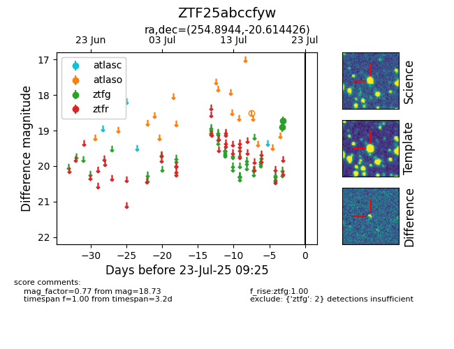

Target ZTF25abccfyw at 2025-07-23 11:52, see:
FINK: fink-portal.org/ZTF25abccfyw
Lasair: lasair-ztf.lsst.ac.uk/objects/ZTF25abccfyw
ALeRCE: alerce.online/object/ZTF25abccfyw
alt names
ZTF25abccfyw (ztf,fink)
coordinates:
equatorial (ra, dec) = (254.8944,-20.61443)
galactic (l, b) = (1.0861,+13.30183)
photometry
last ztfg=18.73
2 ztfg detections
